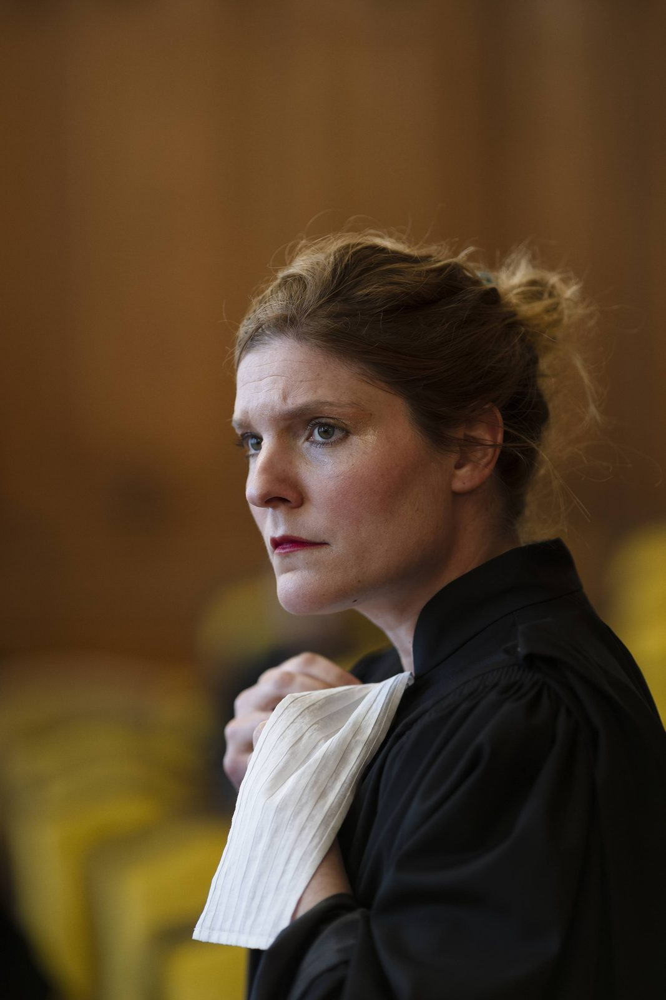
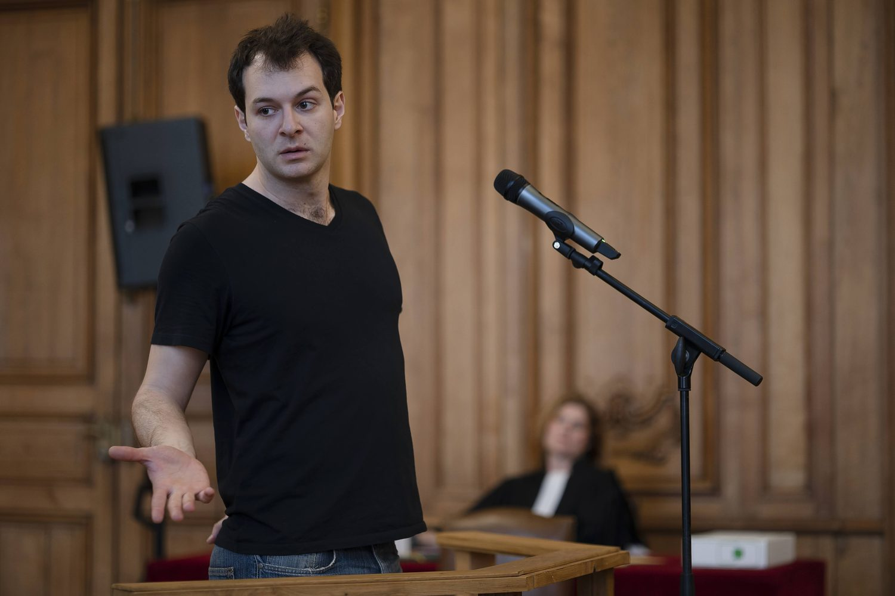
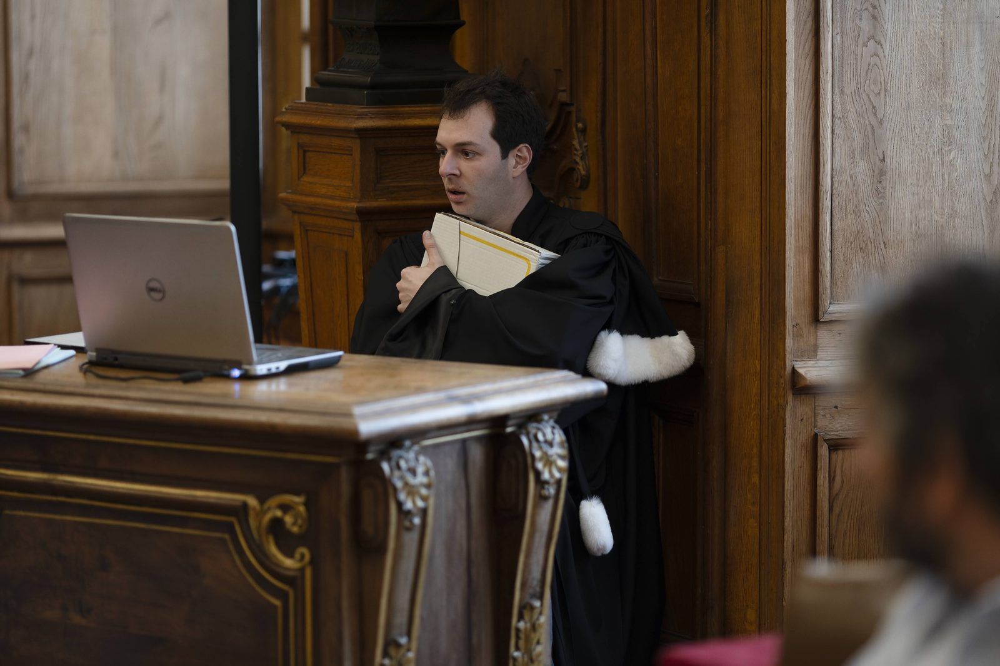
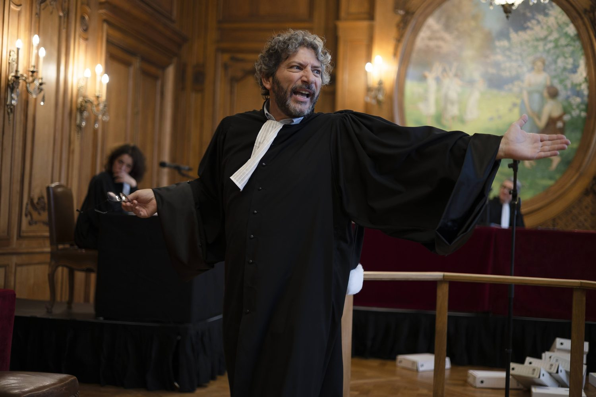
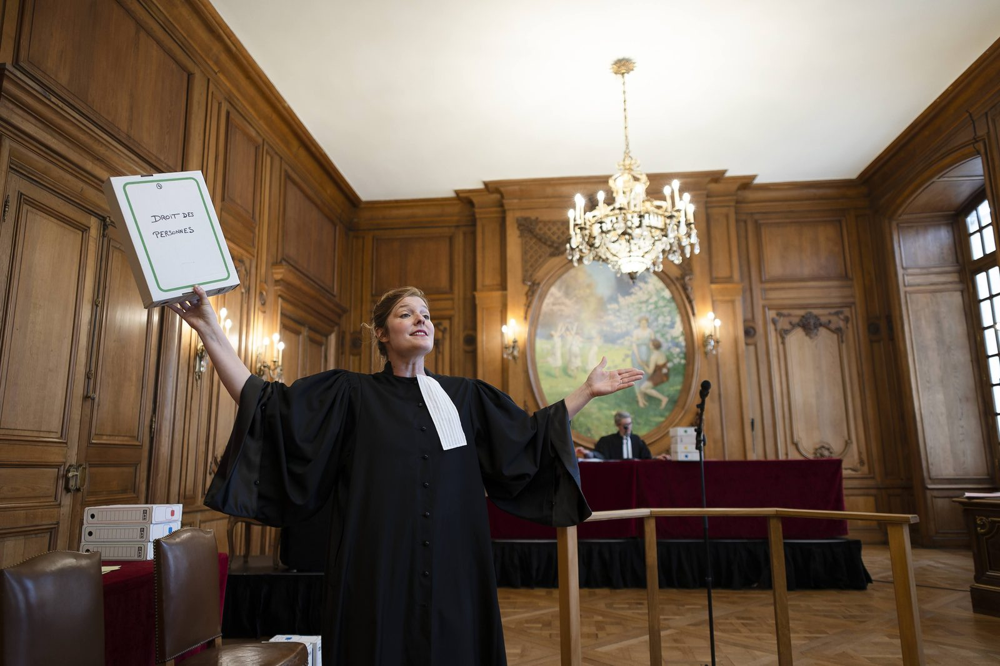
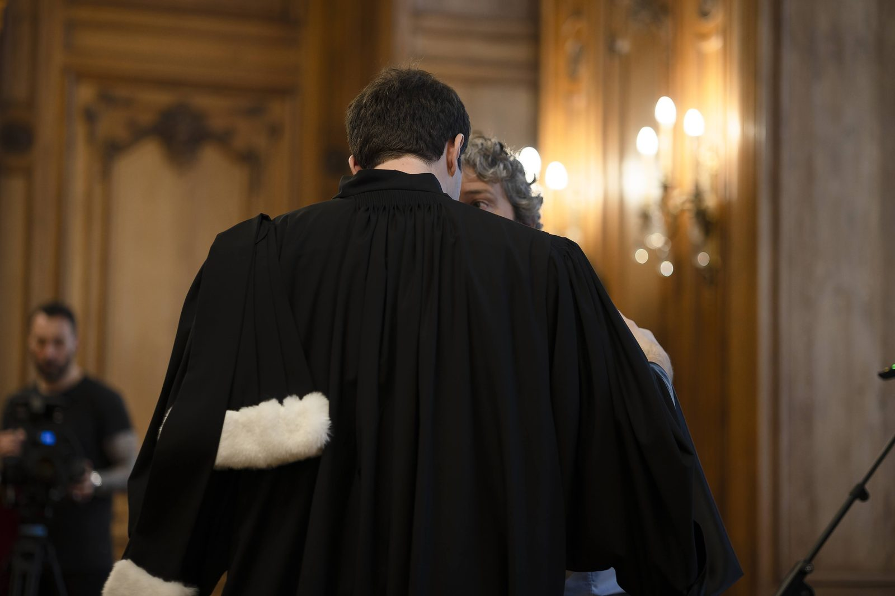
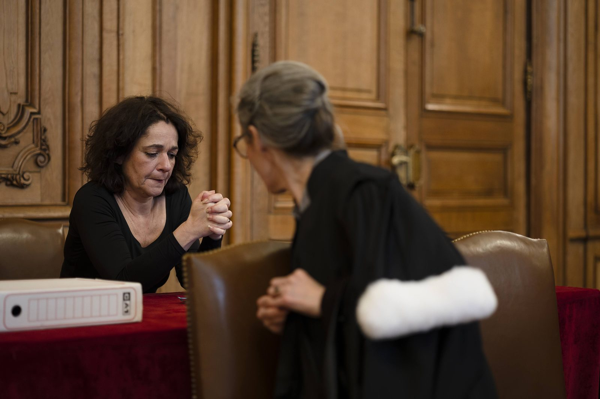

2026 · En tournée
À la barre, peine perdue ?
Rôle Juge, accusé, greffier, avocat, narrateur
CDN de Normandie-Rouen
Inspirés d’affaires réelles, des extraits de procès révèlent la complexité d’une justice en souffrance face à l'ampleur des violences conjugales.
Prochaines représentations
- 22 oct. 2026 · 19h00 Tribunal judiciaire de Rouen (76)
- 23 oct. 2026 · 19h00 Tribunal judiciaire de Rouen (76)
- 12 nov. 2026 · 14h15 Tribunal judiciaire de Saint-Quentin (02)
- 12 nov. 2026 · 20h00 Tribunal judiciaire de Saint-Quentin (02)
- 25 nov. 2026 Hôtel de Ville de Grand-Quevilly (76)
- 12 mars 2027 Hôtel de ville de Barentin (76)
Photographies








Photographies : Arnaud Bertereau
Distribution
- Marion Casabianca
- Anne Cosmao
- Rémi Dessenoix
- Valérie Diome
- Adrien Vada
Jeu et mise en scène collective.